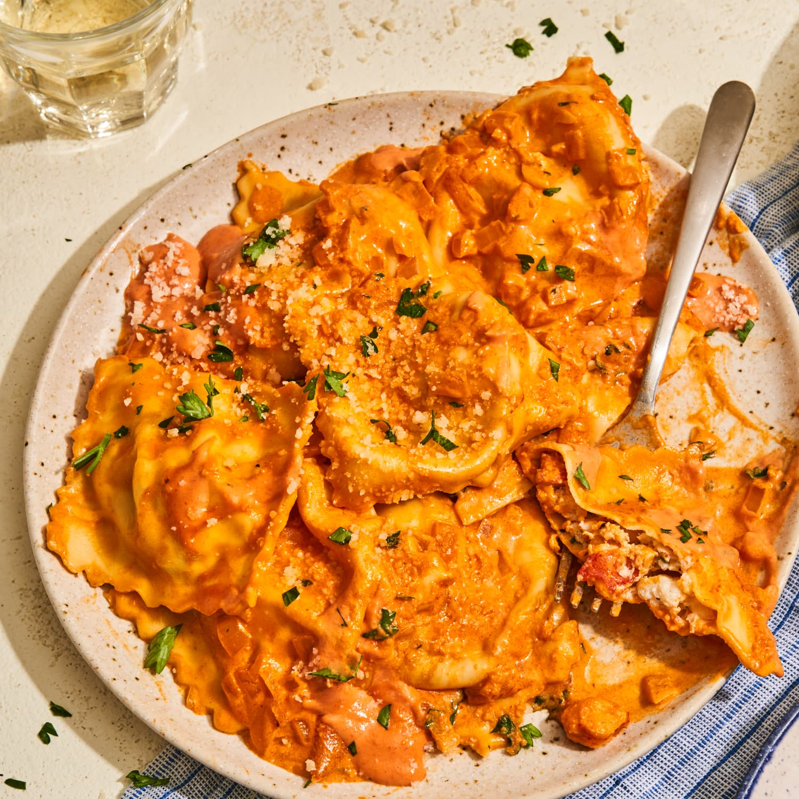

Lobster Ravioli Recipe
Ingredients:
- 200g lobster meat, cooked and chopped
- 200g ricotta cheese
- 1 clove garlic, minced
- 1 tablespoon fresh chives, chopped
- 1 tablespoon fresh parsley, chopped
- Salt & black pepper to taste
- Fresh pasta sheets
- 1 egg, beaten (for sealing)
- 200ml heavy cream
- 50g parmesan cheese, grated
- 2 tablespoons butter
- Juice of ½ lemon
Instructions:
- In a bowl, mix lobster meat, ricotta, garlic, chives, parsley, salt, and black pepper.
- Cut fresh pasta into squares, placing small spoonfuls of filling in the center.
- Brush edges with beaten egg and seal ravioli by pressing firmly.
- Boil ravioli in salted water until they float, about 3 minutes.
- In a pan, melt butter and add heavy cream, parmesan, and lemon juice. Simmer until creamy.
- Toss cooked ravioli in the sauce and serve garnished with fresh parsley.